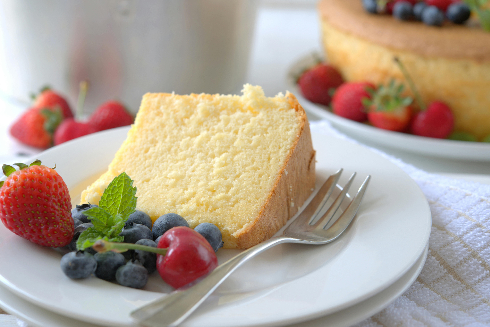

Home
Pound Cake

Description
Pound Cake is an easy to make dessert that pairs well with fruit or ice cream.
This simple dessert is easy to dress up and please your guests.
All of the ingredients are minimally processed and easy to find in most grocery stores.
Ingredients:
- 1 cup butter
- 2 cups white sugar
- 3 eggs
- 1 teaspoon lemon extract
- 2 1/4 all-purpose flout
- 1/2 teaspoon baking soda
- 1/2 teaspon salt
- 8 oz lemon yogurt
Steps:
- Preheat oven to 325 degrees Fahrenheit.
- Grease and flour a 10 inch bundt pan.
- In a large bowl, beat butter and sugar until light and fluffy.
- Beat one egg at a time into the large bowl.
- Add lemon extract to the large bowl and gently combine.
- In the large bowl, sift together half of the flour, baking soda, and salt.
- Add the yogurt to the large bowl and gently combine
- In the large bowl, sift the remaining flour, baking soda, and salt.
- Beat the mixture until just combined.
- Pour the batter into the prepared pan.
- Place the cake pan on the center rack of the oven.
- Bake in the oven until a toothpick inserted into the center comes out clean--about 60 minutes.
- Remove the cake pan from the oven and allow it to cool for about 10 minutes.
- Remove the pound cake bread from the loaf pan and place it onto a wire rack to cool completely.
- Serve and enjoy! (Try it with ice cream, or jam and fresh berries!)